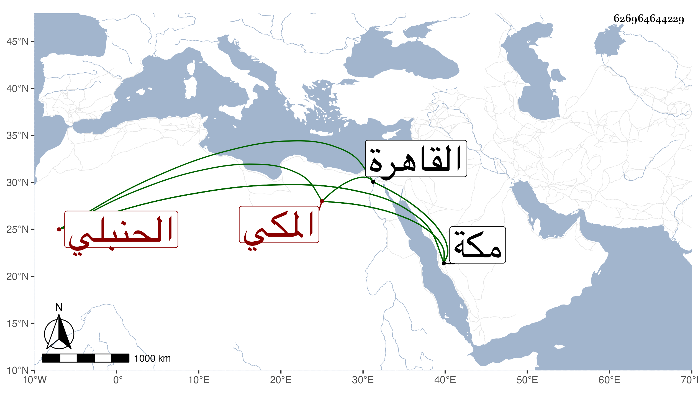

0902Sakhawi.DawLamic.ITO20230111-ara1.EIS1600.626964644229
Biography ID: 626964644229
990
يحيى بن كريم الدين عبد الكريم بن عبد الرحمن بن أبي بكر بن عبد الله بن ظهيرة المكي الحنبلي الماضي أبوه وجده . ولد في صفر سنة إحدى وسبعين بمكة ونشأ فحفظ القرآن وأربعي النووي والوجيز في فروعهم وأصول ابن اللحام وألفية النحو وعرض واشتغل على أبيه وهو ممن سمع مني بمكة في سنة ست وثمانين ثم في سنتي ثلاث وأربع وتسعين وأظنه عرض علي بعض المحفوظات ، وسافر بعد أبيه في أثناء سنة تسع وتسعين بحرا إلى القاهرة وكتبت سلامته .
